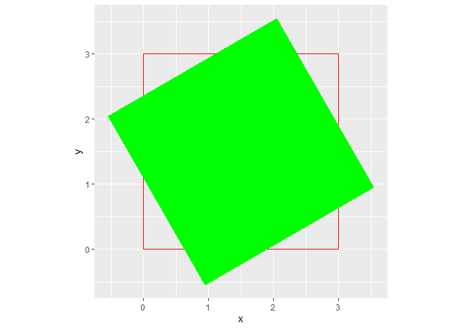

The goal of artpack is to help generative artists of all levels create generative art in R. The artpack package is intended for use with the tidyverse suite. More specifically, with the ggplot2 package.
Installation
You can install {artpack} from CRAN with the following code:
install.packages("artpack")You can install the development version of artpack from GitHub with:
# install.packages("devtools")
devtools::install_github("Meghansaha/artpack")Overview
artpack is a package that helps users create generative art in R with a “data-centric” approach and is currently in early development. artpack is intended to be used with ggplot2 for artistic purposes.
What does data-centric mean in this context?
“data-centric” means that the package focuses on providing direct data outputs to the user, as opposed to providing geom_fxs() like most supplemental packages.
Why data outputs? Wouldn’t geoms be more efficient or user-friendly?
Not necessarily. Data outputs are provided to afford the user freedom of manipulation and choice. artpack is developed to make the user’s life easier by making data generation for ggplot2 art easier. All data outputs are intended to be used with existing ggplot2 geoms like geom_polygon() and geom_path(). For artistic purposes, it can be much easier for a user to manipulate direct data frames, as opposed to trying to “hack” geoms.
Brief Examples
artpack can be used to create specified dataframes that will map art when fed into ggplot2 functions:
For example, square_data() creates a data frame that maps a square on to a ggplot:
library(ggplot2)
library(artpack)
# Use the function to create a data frame #
df_square <-
square_data(
x = 0,
y = 0,
size = 5,
color = "purple",
fill = "black"
)
# Feed it into a ggplot #
df_square |>
ggplot(aes(x = x, y = y)) +
geom_polygon(
fill = df_square$fill,
color = df_square$color,
linewidth = 2
) +
coord_equal()
rotator will mathematically “rotate” existing data points in a data frame:
library(ggplot2)
library(artpack)
original_square <- data.frame(
x = c(0, 3, 3, 0, 0),
y = c(0, 0, 3, 3, 0)
)
rotated_square <- rotator(
data = original_square,
x = x,
y = y,
angle = 120,
anchor = "center"
)
ggplot() +
geom_path(
data = original_square,
aes(x, y),
color = "red"
) +
geom_polygon(
data = rotated_square,
aes(x, y),
fill = "green"
) +
coord_equal()
artpack functions are designed to be used in any part of your workflow. Experiment for some cool results:
library(ggplot2)
library(purrr)
library(dplyr)
#>
#> Attaching package: 'dplyr'
#> The following objects are masked from 'package:stats':
#>
#> filter, lag
#> The following objects are masked from 'package:base':
#>
#> intersect, setdiff, setequal, union
library(tibble)
library(artpack)
# Create a base square #
square <- square_data(x = 0, y = 0, size = .1, group_var = TRUE)
# Create square specs to be iterated on #
n_square <- 500
scaler <- seq(1, 100, length = n_square)
fills <- art_pals("imagination", n = n_square)
angles <- seq(0, 360, length = n_square)
group_n <- group_numbers(1:n_square)
# Add a random transformation for a little razzle dazzle ✨
theta <- seq(0, 30, length = 250)
list_opts <- list(
scaler,
fills,
angles,
group_n
)
df <- pmap(list_opts, ~ rotator(
square |>
mutate(
x = (x + ..1),
y = (y * ..1),
fill = ..2,
group = paste0(group, ..4)
),
x = x, y = y, angle = ..3
)) |>
list_rbind() |>
mutate(
x = x + cos(theta),
y = y + sin(theta)
)
df |>
ggplot(aes(x = x, y = y, group = group)) +
theme_void() +
theme(plot.background = element_rect(fill = "#000000")) +
geom_path(
color = df$fill,
alpha = .2
)